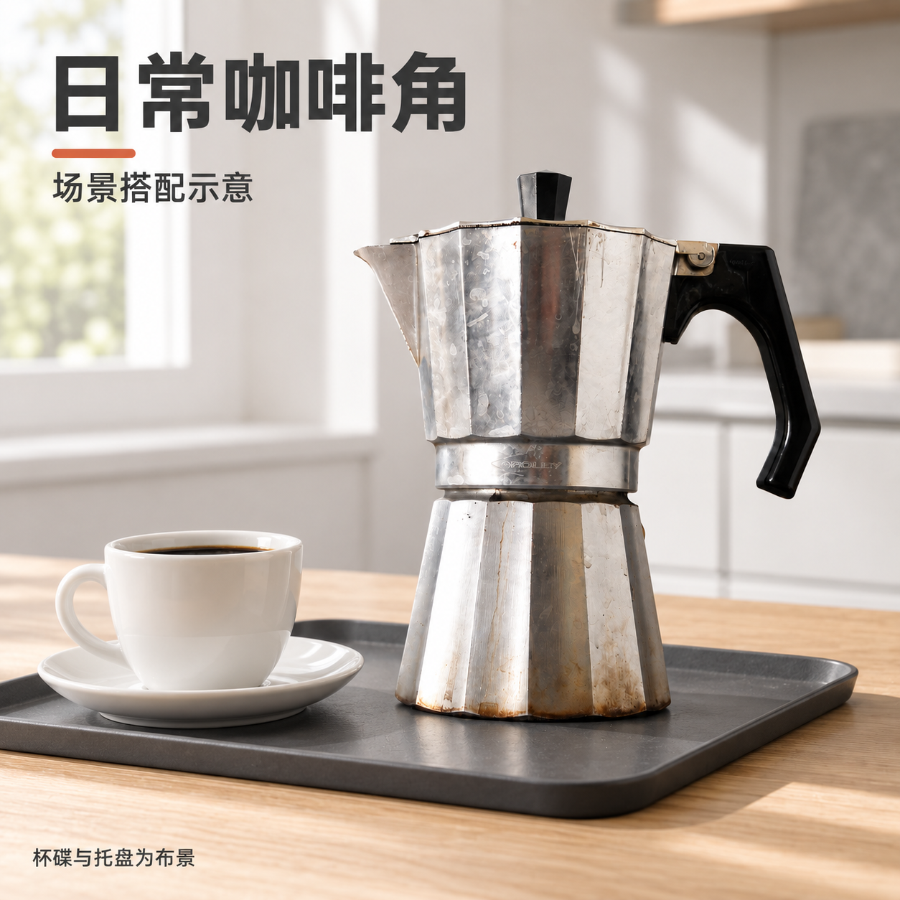

银色多面壶身摩卡壶 · scene
有待核对咖啡角情境：保留原物，真实台面搭配一只杯碟；不演示无法确认的工作步骤
 原图参考
原图参考
候选 v1 · 保存图片- 商品一致性 已实际查看原始照片与当前工具完整成图。原物上下壶体、左嘴、黑色顶钮与上接下悬侧柄的可见结构保持；局部水渍/划痕与微小标记有生成式重构，不能确认精细一致。
- 文字 计划中的中文标题和说明已看图核对，可读且无错漏。商品原刻字/微小表面标记较小或被重构，未确认逐笔准确。
- 卖点依据 仅呈现当前商品可见结构与日常场景，没有借用竞品容量、材质成分、温度、功率、认证或销售数据。 杯碟和托盘明确标为布景。
- 视觉 台面、杯碟和托盘构成可识别咖啡角；商品完整且与道具分离，文本明确道具为布景；与前三张共用黑色无衬线和橙线。 结论覆盖本次实际查看的图片尺寸，未单独验证所有手机缩略尺寸。
- 使用范围 当前用途为通用商品附图/详情模块样例，未将其当作平台第一主图合规证明。